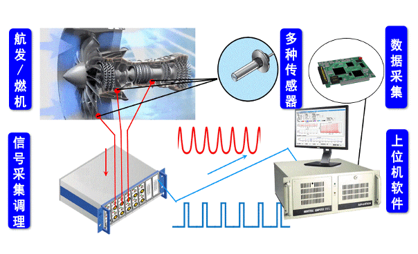
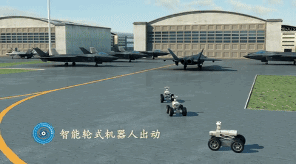
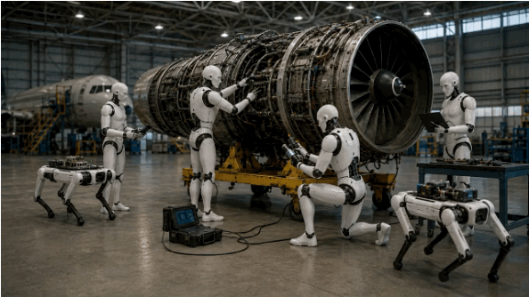

Team Leader
杨来浩 副研究员
西安交通大学机械工程学院、航空发动机研究所。研究方向包括具身智能、机器人、触觉传感、航空发动机健康管理、AI for Science 与可解释人工智能。
About
团队依托西安交通大学机械工程学院、航空发动机研究所及健康管理与数字孪生相关平台，面向高端装备安全运行、智能检测和原位维护需求，开展机器人、智能传感、结构动力学、数字孪生和可解释人工智能交叉研究。
Team Leader
西安交通大学机械工程学院、航空发动机研究所。研究方向包括具身智能、机器人、触觉传感、航空发动机健康管理、AI for Science 与可解释人工智能。
Research
团队研究主线可概括为“智能诊断、原位介入、具身操作”。三者构成从装备状态感知到机器人进入，再到精细处置的完整链路：先判断损伤在哪里、程度如何，再让柔顺机器人进入复杂深腔空间，最终融合人形机器人、灵巧手、触觉感知和具身智能实现稳定操作。

Intelligent Diagnosis
面向航空发动机、燃机等高端装备关键零部件，研究裂纹、烧蚀、掉角、漏油等损伤的演化机理与多源信号表征，结合叶尖定时、非接触振动监测、信号采集调理和可解释深度学习，实现损伤位置、程度与风险的定量诊断。

In-situ Intervention
面向高端装备内部狭窄、弯曲、遮挡和接触丰富的受限空间，发展连续体机器人、爬行机器人与柔顺关节创新设计，研究高效力学建模、运动规划和接触安全控制，使机器人能够原位抵达检测、维护和处置目标区域。

Embodied Manipulation
以“操作稳”为目标，融合人形机器人、灵巧手、触觉电子皮肤、视觉检测和具身智能决策技术，研究高端装备精细操作、原位处置和多机器人协同，使机器人不仅能够进入装备内部，还能够在复杂环境中稳定完成检测、打磨、夹持与处置任务。
News
团队招生方向包括新一代人工智能与传感、航空发动机机器人检测技术、航空发动机数字孪生与健康管理、柔性与软体机器人等。
项目周期为 2025.01-2028.12，围绕航空发动机原位维护与连续体机器人关键技术展开。
学校主页显示团队在 2025 年获得 ICSMD 2025 Best Paper Award 及全国振动理论及应用学术会议高水平论文奖等荣誉。
团队机器人相关研究在 2024 年获得第五届中国机器人学术年会最佳海报奖。
博士、硕士、本科生及联合培养成员名单可继续按年级、方向、课题组职责补充。
学校主页列出团队相关成果获得 2023 年陕西省高等学校科学技术奖一等奖。
Members
团队围绕高端装备智能检修机器人形成多层次人才培养体系，覆盖团队领导、教师/合作导师、博士后、博士研究生、硕士研究生、本科生和毕业生。以下名单根据学校教师主页公开成员信息整理。
团队领导
副研究员，博士。西安交通大学机械工程学院、航空发动机研究所。
围绕航空发动机健康管理、机器人检测、智能传感和数字孪生开展跨方向协同；公开页面暂未列出更多教师姓名。
聚焦具身操作、机器人系统集成、物理智能诊断和 AI for Science 方法拓展；公开页面暂未列出博士后姓名。
深腔探入式检测机器人系统设计与控制方法
航空发动机转子叶片可解释深度智能监测诊断
数字孪生驱动的转子叶片健康监测
非结构化环境下仿生软体机器人柔顺操控
超冗余机器人动力学控制
连续体机器人柔顺关节创新设计
连续体机器人动力学建模与控制
主被动连续体机器人控制与传感
连续体打磨机器人控制
插簧型连续体机器人设计与建模
连续体机器人柔顺关节创新设计
水下仿生机器人
刘乙雪2025 · 硕士论文：折纸启发的磁性薄膜多维力触觉电子皮肤 · 毕业去向：比亚迪
郑毅2025 · 硕士论文：多节连续体机器人控制策略研究与系统设计 · 毕业去向：华为
罗旭良2025 · 硕士论文：模型约束下数据驱动的转子叶片监测诊断研究 · 毕业去向：中广核
彭银冲2025 · 硕士论文：连续体机器人优化设计与高效力学建模 · 毕业去向：南瑞继保
杨冬2024 · 硕士论文：超冗余连续型机器人高精度控制与运动规划方法研究 · 毕业去向：人本
王景2024 · 硕士论文：基于非接触测量的航空发动机转子叶片在线监测研究 · 毕业去向：一飞院
兰雨2023 · 硕士论文：航空发动机原位检测双芯柱连续体机器人运动控制研究 · 毕业去向：中兴
庞丁2022 · 硕士论文：基于数字孪生的航空发动机转子叶片裂纹监测诊断研究 · 毕业去向：西安618所
徐露2020 · 本科毕业设计：基于深度学习的冗余机器人位姿评估方法 · 毕业去向：本校直博
Achievements
论文列表按本地 Zotero A My Work 收藏夹整理，当前收录 60 篇唯一论文，并按 SCI 期刊、EI 期刊、EI 会议、预印本和其他论文分类展示。
SCI 期刊 · IEEE Robotics and Automation Letters · DOI
SCI 期刊 · Science Advances · DOI
SCI 期刊 · Aerospace Science and Technology · DOI
EI 期刊 · 应用基础与工程科学学报 · DOI
EI 期刊 · 机械工程学报 · 链接
EI 期刊 · 机械工程学报 · 链接
EI 期刊 · 振动、测试与诊断 · 链接
预印本 · Research Square · DOI
预印本 · Social Science Research Network · DOI
其他期刊 · 自动化与信息工程 · 链接
SCI 期刊 · Frontiers of Mechanical Engineering · DOI
SCI 期刊 · Robotics and Autonomous Systems · DOI
SCI 期刊 · Neural Networks · DOI
SCI 期刊 · IEEE Transactions on Instrumentation and Measurement · DOI
SCI 期刊 · IEEE Transactions on Instrumentation and Measurement · DOI
SCI 期刊 · IEEE Transactions on Instrumentation and Measurement · DOI
SCI 期刊 · Measurement · DOI
SCI 期刊 · Chinese Journal of Aeronautics · DOI
SCI 期刊 · Mechanical Systems and Signal Processing · DOI
EI 会议 · 2025 International Conference on Sensing, Measurement & Data Analytics in the era of Artificial Intelligence (ICSMD) · DOI
EI 会议 · Advances in Mechanism and Machine Science and Engineering in China · DOI
EI 会议 · Journal of Physics: Conference Series · DOI
EI 会议 · Intelligent Robotics and Applications · DOI
EI 会议 · Intelligent Robotics and Applications · DOI
EI 会议 · Intelligent Robotics and Applications · DOI
EI 会议 · 2025 IEEE International Instrumentation and Measurement Technology Conference (I2MTC) · DOI
其他会议 · Equipment intelligent operation and maintenance
SCI 期刊 · IEEE Robotics and Automation Letters · DOI
SCI 期刊 · Mechanism and Machine Theory · DOI
SCI 期刊 · IEEE/ASME Transactions on Mechatronics · DOI
SCI 期刊 · IEEE Transactions on Instrumentation and Measurement · DOI
SCI 期刊 · IEEE Transactions on Robotics · DOI
SCI 期刊 · Advanced Science · DOI
SCI 期刊 · Advanced Intelligent Systems · DOI
SCI 期刊 · IEEE Transactions on Instrumentation and Measurement · DOI
SCI 期刊 · Thin-Walled Structures · DOI
SCI 期刊 · IEEE Robotics and Automation Letters · DOI
SCI 期刊 · Structural and Multidisciplinary Optimization · DOI
SCI 期刊 · Frontiers of Mechanical Engineering · DOI
SCI 期刊 · Journal of Dynamics, Monitoring and Diagnostics · 链接
SCI 期刊 · Frontiers of Mechanical Engineering · DOI
EI 会议 · Intelligent Robotics and Applications · DOI
EI 会议 · Advances in Mechanism, Machine Science and Engineering in China · DOI
EI 会议 · 2023 International Conference on Sensing, Measurement & Data Analytics in the era of Artificial Intelligence (ICSMD) · DOI
EI 会议 · 2023 International Conference on Sensing, Measurement & Data Analytics in the era of Artificial Intelligence (ICSMD) · DOI
SCI 期刊 · Mechanism and Machine Theory · DOI
EI 会议 · 2022 International Conference on Sensing, Measurement & Data Analytics in the era of Artificial Intelligence (ICSMD) · DOI
EI 会议 · Journal of Physics: Conference Series · DOI
EI 会议 · 2022 International Conference on Sensing, Measurement & Data Analytics in the era of Artificial Intelligence (ICSMD) · DOI
SCI 期刊 · Materials · DOI
SCI 期刊 · Nonlinear Dynamics · DOI
SCI 期刊 · Journal of Vibration and Acoustics · DOI
SCI 期刊 · Frontiers of Mechanical Engineering · DOI
SCI 期刊 · Journal of Low Frequency Noise, Vibration and Active Control · DOI
SCI 期刊 · Journal of Vibration and Acoustics · DOI
EI 会议 · Intelligent Robotics and Applications · DOI
EI 会议 · 2021 Global Reliability and Prognostics and Health Management (PHM-Nanjing) · DOI
SCI 期刊 · Proceedings of the Institution of Mechanical Engineers, Part C: Journal of Mechanical Engineering Science · DOI
SCI 期刊 · Journal of Vibration and Acoustics · DOI
EI 会议 · ASME 2016 International Mechanical Engineering Congress and Exposition · DOI
发明专利
发明专利
发明专利
专著
荣誉奖励
荣誉奖励
荣誉奖励